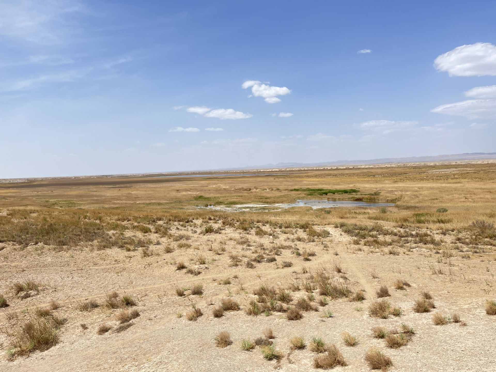
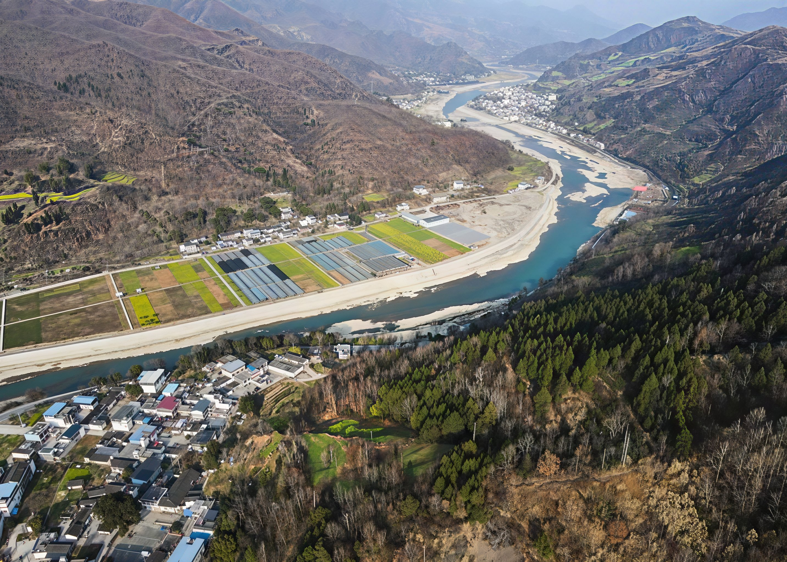

一、地图上的省域视角
📍 拖动 / 缩放地图，观察迭部与川甘边界及阿坝州、甘南州的关系
当前视角：甘肃省域宏观视角
🏔️ 甘肃省域（缩放级别 5）
二、核心知识点解析
1. 甘肃南部的“生态屏障”
迭部地处甘肃省南部，青藏高原东缘与秦岭西延的交汇处。它是甘肃省内极为重要的长江上游水源涵养区。这里的森林覆盖率达 64.87%，被誉为“陇上江南”。
在地理教学中，可以引导学生对比甘肃西北部的“河西走廊”（干旱荒漠）与南部的“迭部”（湿润森林），深刻理解“甘肃省跨越四大干湿地区”的地理特殊性。

甘肃西北：河西走廊（干旱）自摄
甘肃南部：迭部（湿润）自摄
2. 白龙江流域的系统关联
白龙江发源于甘南，流经迭部，最终在四川汇入嘉陵江。通过地图缩放，学生可以清晰看到：上游的迭部水土流失或植被破坏，会直接影响到下游四川的防洪安全与水资源量。
这对应了2022版课标中“说明流域内上下游、左右岸的生态关联”的要求，是培养学生系统思维与人地协调观的绝佳案例。

白龙江（嘉陵江支流）峡谷景观三、教材链接与课标对应
| 对应教材章节 | 核心知识点 | 本页面的教学切入点（迭部案例） | 核心素养 |
|---|---|---|---|
| 八年级上册第二章 中国的自然环境 第三节 河流 |
长江的源流概况、上中下游的划分及水文特征；外流河的水文特征。 | 以白龙江（嘉陵江支流、长江流域）为例，说明上游（迭部段）植被覆盖率高、含沙量小对下游（四川）防洪安全的重要意义。 | 区域认知：认识白龙江流域的空间范围与上下游关系；综合思维：分析植被—水文—防洪的因果链条；人地协调观：理解上游生态保护对下游安全的意义。 |
| 八年级上册第三章 中国的自然资源 第二节 水资源 |
我国水资源的时空分布不均；解决水资源问题的措施（如跨流域调水、节约用水、保护水源）。 | 探讨迭部作为“长江上游重要水源涵养区”，其森林保护如何影响甘肃乃至全国的水资源安全格局。 | 区域认知：认识迭部作为水源涵养区的空间定位；综合思维：理解森林保护与水资源安全的关联；人地协调观：树立保护水源、可持续利用水资源的观念。 |
| 八年级下册第八章 西北地区 （对比延伸） |
西北地区的自然环境特征与农业、生态问题。 | 对比甘肃西北部（河西走廊）的干旱缺水与甘肃南部（迭部）的湿润多雨，理解甘肃省“地跨四大干湿区”的过渡性特征。 | 区域认知：对比河西走廊与迭部的干湿差异；综合思维：分析甘肃省跨越四大干湿区的成因；地理实践力：通过地图与景观图对比观察区域差异。 |
四、互动探究任务
任务：流域上下游的“对话”（对接教材：中国的河流）
假设你是四川省嘉陵江畔的居民，请你给甘肃省迭部县的县长写一封简短的建议信。你会对他说些什么？
教师提示：引导学生从“水源涵养”“水土保持”“森林保护”等角度思考。例如：“感谢上游迭部人民保护白龙江源头的森林，希望你们继续限制乱砍滥伐，因为这关系到我们下游的饮水安全和防洪。”